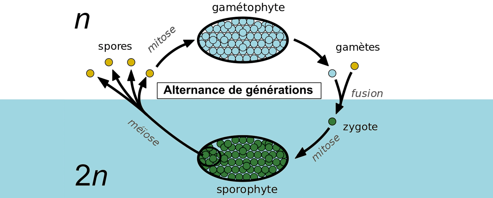

Les algues :
Les algues vertes, vivant dans l'eau, bénéficient d'un soutien naturelle et d'un apport direct en sels minéraux. Elles sont à l'origine des plantes terrestre.


Algue verte filamenteuse
Le thalle, caractéristique des Thallophytes, est un appareil végétatif très varié mais sans organisation particulière.
Schéma du cycle de reproduction des algues
Les algues se reproduisent de différentes manières : par reproduction végétative, asexuée et sexuée. Chez certaines algues, la reproduction sexuée se caractérise par une alternance de générations entre deux phases : le gamétophyte et le sporophyte.